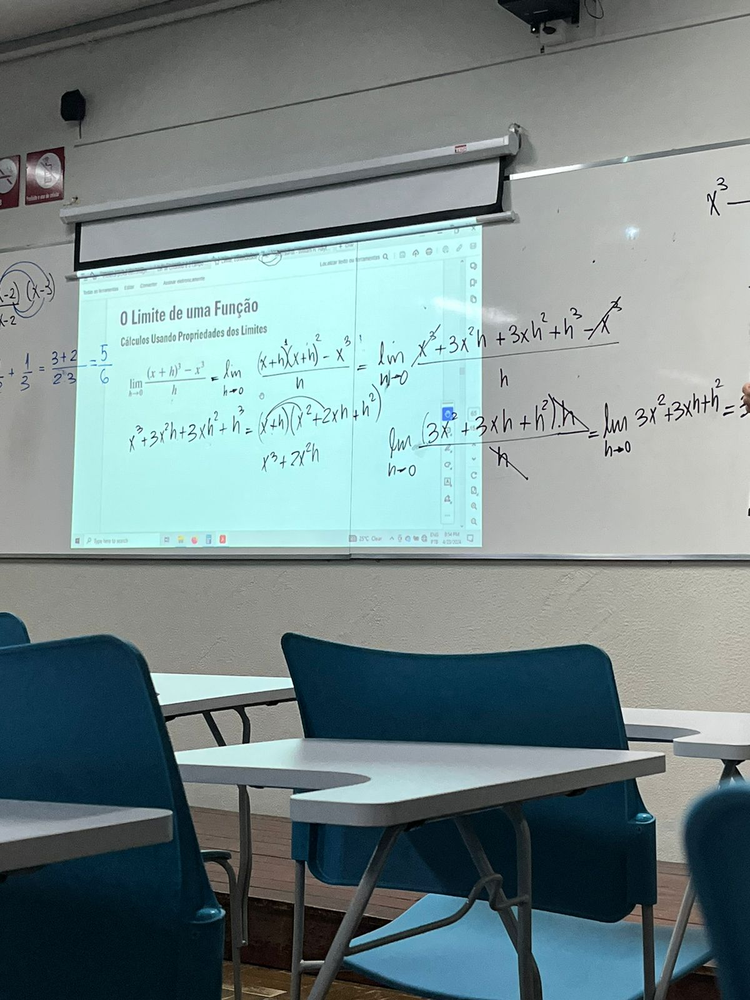

Cálculo
Este semestre na matéria de Cálculo tem sido desafiador para mim. Eu estou achando o conteúdo bastante difícil, especialmente algumas das integrações e derivadas mais complexas. No entanto, eu entendo a importância dessa disciplina para minha formação acadêmica e profissional. Apesar das dificuldades, estudando regularmente e buscando ajuda quando necessário. Sei que dominar Cálculo é crucial para minha área de estudo e estou determinado a superar esses obstáculos para alcançar um bom desempenho na matéria.

Algoritimos e Estrutura de Dados
Já na matéria de Algoritmos e Estrutura de Dados, estou adorando a experiência. Embora alguns conceitos sejam complexos, como nas novas matérias sobre funções e ponteiros estou me dedicando para aprender, porém estou gostando do conteúdo. A lógica por trás da criação e otimização de algoritmos, bem como a organização eficiente de dados, é muito legal. Estou me dedicando aos estudos e aproveitando cada oportunidade para aprender mais, estou animado com as habilidades que estou adquirindo.
Laboratório de LPHS
Em Laboratório de Hardware tem sido extremamente envolvente para mim. Estou gostando de aprender sobre os componentes físicos dos computadores e como eles funcionam juntos. Montar e desmontar hardware, arduíno, sensores, e entender as máquinas tem sido uma experiência prática e enriquecedora. Embora alguns aspectos técnicos tenham sido difíceis, a natureza prática das aulas torna tudo muito interessante. Essa área de Hardware será essencial para a minha formação, e estou empolgado com as habilidades práticas que estou adquirindo.
Seminários I
Na disciplina de Seminários 1, estou explorando HTML, CSS e JavaScript. É como desvendar os bastidores da internet, estou adorando cada momento dessa experiência. Criar páginas web e deixá-las bonitas e interativas é muito legal. Cada nova coisa que aprendo me deixa mais animado para continuar. Estou realmente curtindo essa jornada na programação web!
Mentoring I
Em Mentoring I, tenho tido a oportunidade de conhecer diferentes aspectos interessantes da minha área de estudo. É incrível descobrir curiosidades como na aula sobre direitos autorais, onde aprendemos sobre questões éticas. Outro momento marcante foi quando o professor trouxe alunos da computação que estudaram em Portugal. Foi inspirador ouvir suas experiências e aprender sobre as diferenças na educação e na indústria de tecnologia em outro país. Cada aula traz novas perspectivas e oportunidades de aprendizado.